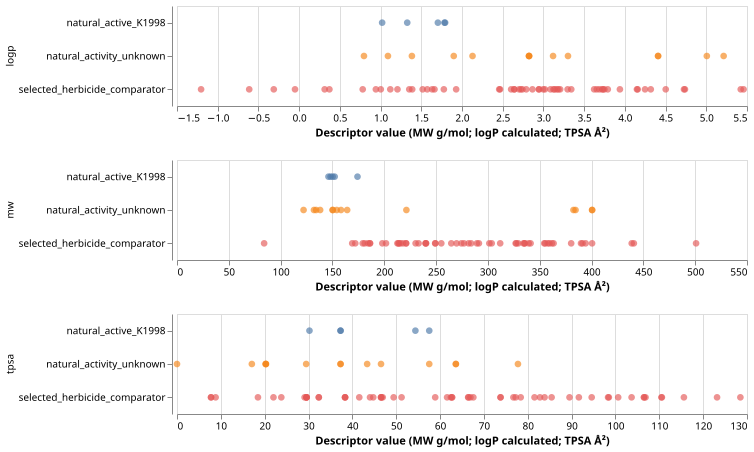
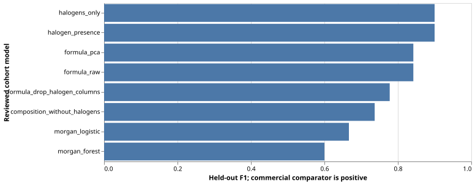
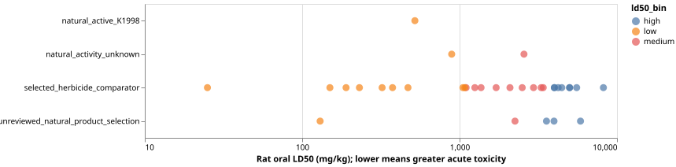

Human adoption establishes 19 natural-occurrence labels and 80 bounded activity decisions across four supported policies. Source gaps and unknowns remain. No supported assay-specific activity model is available.
Five natural compounds meet the 1998 authors’ very-active category; fourteen approved natural compounds have unknown activity under that policy. There are zero low-response examples under that policy. The 58 selected herbicides are a separate purposive comparator, not an assay-matched activity class.

The 30-compound contrast contains 19 natural-occurrence examples and 11 documented commercial-herbicide manufacturing comparators. It predicts membership in these two groups, not natural origin, herbicidal activity, safety or protein binding. Natural occurrence and commercial manufacture can coexist. Five scaffold folds have very small test partitions. These scores do not represent improvement over the historical 171-compound task.

The historical 43 exact observations, 34 exact compound medians, 25 bounds and 1,080/3,400 mg/kg cutoffs are preserved. Only evidence-group annotation changes. Low LD50 means greater acute toxicity; these are not regulatory risk bins. Source ECOTOX candidate overlaps are not automatically source-identity approval.
